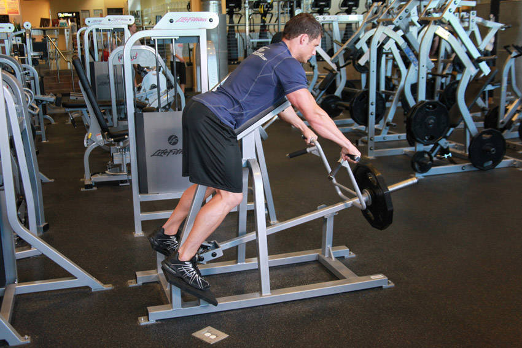
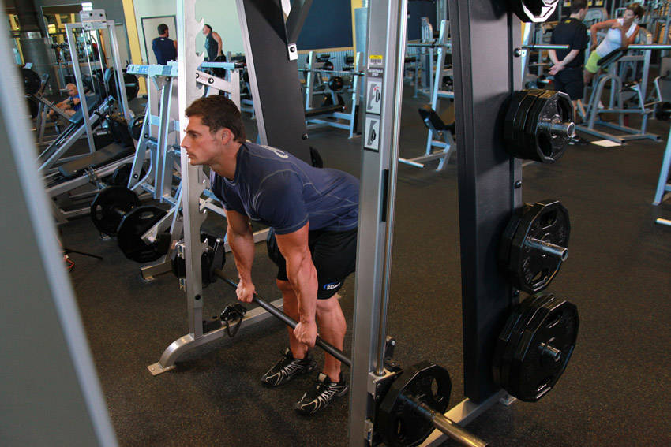
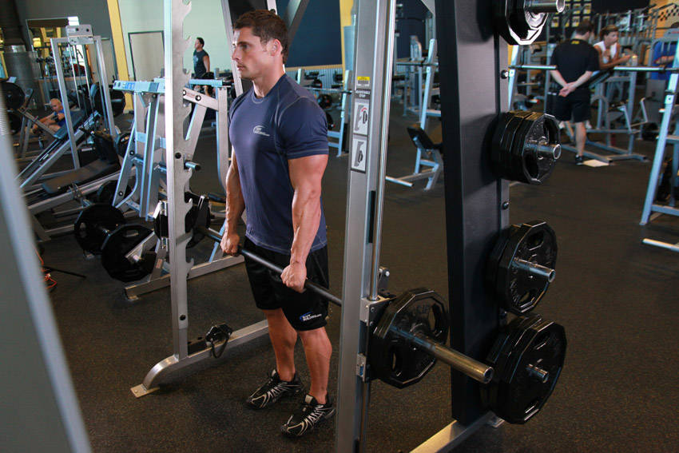
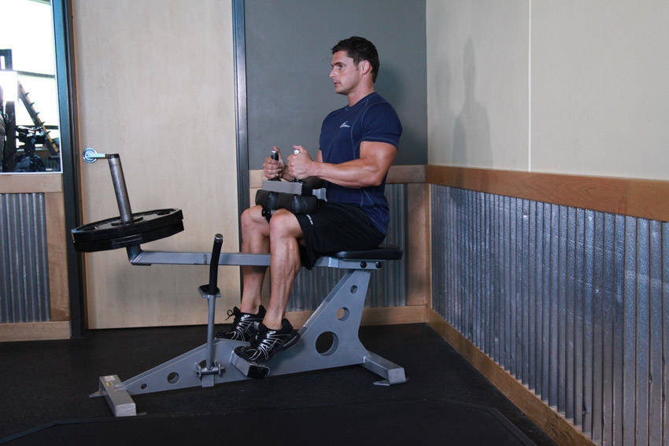
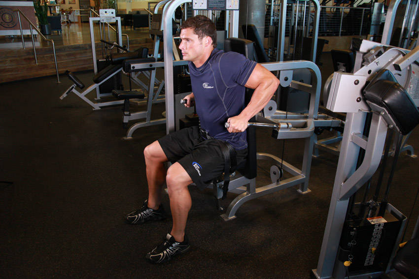
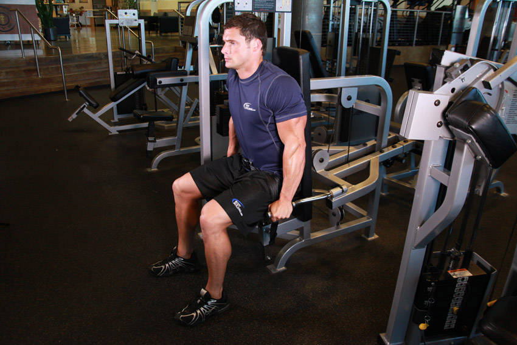
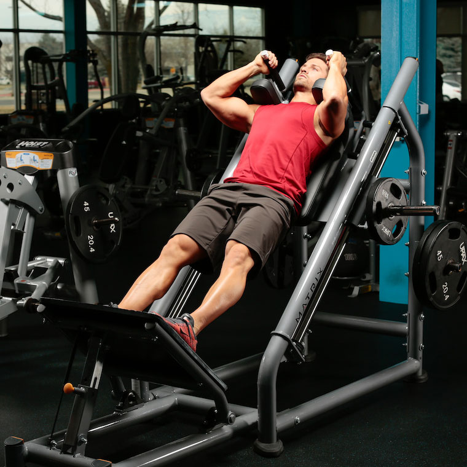

Упражнения, которых у нас пока нет
Картинки из открытой базы free-exercise-db. Посмотри, есть ли такие тренажёры у вас в зале, и отметь, что есть.
Грудь, верх · блокСведение в кроссовере снизу вверх
Нужно: кроссовер с блоками внизу (у вас есть кроссовер).
Зачем: верх груди — то, что делает грудь «полной» в футболке; снизу вверх нагружает его лучше, чем обычное сведение.
Куда: понедельник, вместо или рядом с бабочкой.
Грудь, верх · СмитЖим в Смите на наклонной
Нужно: машина Смита и регулируемая скамья.
Зачем: можно давить тяжело и безопасно без страховки, хорошо для верха груди.
Куда: замена жима гантелей на наклонной, если гантели закончились.
Спина, толщина · рычагТяга Т-грифа лёжа грудью на опоре


Нужно: тренажёр с упором для груди и плитами (рычажная тяга).
Зачем: толщина спины: середина спины и ромбовидные. Грудь на опоре — не раскачаться, спина работает чище.
Куда: вторник, вместе или вместо тяги нижнего блока.
Спина, ширина · гантель или блокПуловер с прямыми руками
Нужно: гантель и скамья; то же можно на верхнем блоке стоя.
Зачем: широчайшие в изоляции, без включения бицепса — даёт форму «V» сверху.
Куда: вторник, финишером после тяги к груди.
Бицепс · тренажёрСгибание рук в тренажёре Скотта
Нужно: скамья Скотта или тренажёр с наклонным упором для рук.
Зачем: локти зафиксированы — нагрузка на бицепс чистая, растянутое положение работает сильнее.
Куда: вторник, вторым упражнением на бицепс.
Задняя поверхность бедра · штангаРумынская тяга
Нужно: штанга со стойкой; вариант в Смите — ниже.
Зачем: задняя часть бедра и ягодицы: сгибание ног работает на бицепс бедра только в одном месте, а тяга растягивает его под нагрузкой.
Куда: четверг, вместо или после сгибания ног.
Задняя поверхность бедра · СмитТяга на прямых ногах в Смите


Нужно: машина Смита.
Зачем: то же, что румынская тяга, но проще по технике — штанга идёт по направляющей.
Куда: четверг, если штанга со стойкой неудобна.
Ягодицы · штангаЯгодичный мостик со штангой
Нужно: штанга и скамья (подкладка под гриф).
Зачем: ягодицы — на них почти не работает ни жим ногами, ни разгибания. Сильные ягодицы улучшают вид сзади и помогают в приседе.
Куда: четверг, 3 подхода по 10–12.
Икры, камбаловидная · тренажёрПодъём на носки сидя


Нужно: тренажёр для икр сидя (валик на колени).
Зачем: с согнутыми коленями работает камбаловидная — нижняя, широкая часть икры; стоя она включается слабо.
Куда: четверг, вместо одного из подходов на икры стоя.
Грудь низ, трицепс · тренажёрОтжимания на брусьях в тренажёре


Нужно: тренажёр «Дип» (сидя, ручки вниз).
Зачем: тяжёлая нагрузка на трицепс и низ груди без риска для плеч.
Куда: пятница, вместо жима от груди или рядом с ним.
Квадрицепсы · тренажёрГакк-присед


Нужно: гакк-машина (платформа под углом, плечи под упорами). Ваш рычажный тренажёр близок по смыслу.
Зачем: ещё один вариант приседа для четверга или пятницы, если надоест рычажный.
Куда: замена или вариация в четверг/пятницу.